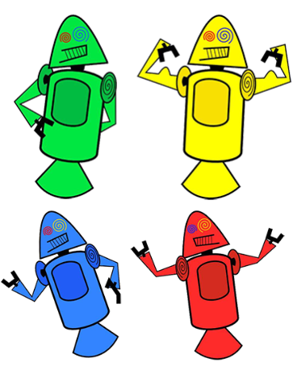
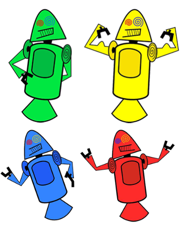
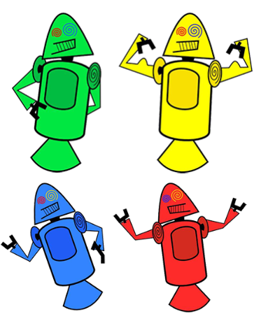

Tudo aquilo que você sempre quis saber sobre o mundo Tech, em um único lugar
Historia do Mascote do Android
Provavelmente você sabe que o sistema operacional Android, mantido pelo Google é um dos mais utilizados para
dispositivos móveis em todo o mundo. Mas tavez você não saiba que o seu simpático mascote tem um nome e uma
história muito curiosa? Pois acompanhe esse artigo para aprender muita coisa sobre esse robozinho.
A primeira versão
A primeira tentativa de criar um mascote surgiu em 2007 e veio de um desenvolvedor chamado Ele conta
que abriu o (software livre para vetorização de
imagens) e criou sua própria versão de robô. O objetivo era apenas personificar o sistema apenas para a a
sua equipe, não existia nenhuma solicitação da empresa para a criação de um mascote.

Essa primeira versão bizarra até foi batizada em homenagem ao seu criador: seriam os Dandroids.
Surge um novo mascote
A ideia de ter um mascote foi amadurecendo e a missão foi passada para uma profissional da área. A
ilustradora Russa Irina Blok, também funcionária do Google, ficou com a missão de
representar o pequeno robô de uma maneira mais agradável.
A ideia principal da Irina era representar tudo graficamente com poucos traços e de forma mais chapada. O
desenho também deveria gerar identificação rápida com quem o olha. Surgiu então o Bugdroid, o novo mascote
do Android.
A principal inspiração para os traços do novo Bugdroid veio daqueles bonequinhos que ilustram portas de
banheiro para indicar o gênero de cada porta. Conta a lenda que a artista estava criando em sua mesa no
escritório do Google e olhou para o lado dos banheiros e a identificação foi imediata: simples, limpo,
objetivo.
Quer aprender mais?
Outro assunto curioso em relação ao Android é que cada versão sempre foi nomeada em homenagem a um
doce,
em ordem alfabética a partir da versão 1.5 até a 9.0.
Infelizmente, o Android Q não existiu, pois o Google resolveu pôr fim a essa divertida prática e
começou
a usar numerações, o que deu origem ao Android 10.
Acesse aqui o site Android History para conhecer a sequência das versões "adocicadas" e o que cada
uma
trouxe para o sistema Android.
Então é isso! Espero que você tenha gostado do nosso artigo com essa curiosidade
sobre o sistema Android e seu simpático mascote.
 
